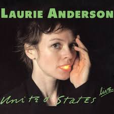
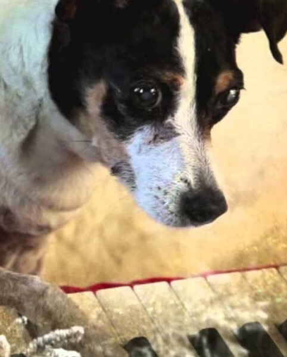

Tecnología, narrativa y experimentación
¡Soltate!
En la siguiente entrevista, la legendaria artista multimedial, música y directora Laurie Anderson utiliza esta simple palabra para aconsejar a los jóvenes artistas de no sentirse presionado a limitarse artísticamente a sí mismos.
"Es muy fácil ser subestimado en el mundo del arte". Anderson es consciente de que las ventas son un factor importante en el arte – "Soy una ciudadana del siglo 21 en un mundo altamente corporativo" – pero a pesar de eso, ella sostiene que siempre debes follow tus propios intereses y pasiones: "Lo que sea que te haga sentir libre y realmente bien – eso es lo que debes hacer. Es así de simple."
Carrera musical
En cuanto a sus proyectos puramente musicales, sus obras suelen desarrollarse como narraciones
fragmentadas, donde la voz guía al espectador a través de historias que mezclan lo personal, lo
político y lo ficticio. Este enfoque permite explorar nuevas formas de contar, donde la estructura no es
lineal y la interpretación queda abierta.
Utiliza dispositivos electrónicos, procesamiento de voz y medios audiovisuales para construir
experiencias que combinan relato y experimentación.
Entre sus trabajos más tempranos, sus álbumes más reconocidos son Big Science (1982) y United
States Live (1984), su música se caracteriza por crear un efecto 'Cine Audio', al combinar aspectos del
arte experimental performático con sonidos electrónicos, synth-pop, los cuales eran novedosos para su
época.


Otros proyectos




Heart of a Dog es un documental de 2015 dirigido por la artista visual y compositora Laurie Anderson. Se centra en los recuerdos de Anderson de su difunta y querida perra Lolabelle, que toca el piano y pinta con los dedos.
Chalkroom es una obra de realidad virtual de Laurie Anderson y Hsin-Chien Huang en la que el
lector vuela a través de una enorme estructura hecha de palabras, dibujos e historias.
Una vez que ingresas, eres libre de deambular y volar. Las palabras navegan por el aire como
correos electrónicos. Caen al polvo. Se forman y reforman.